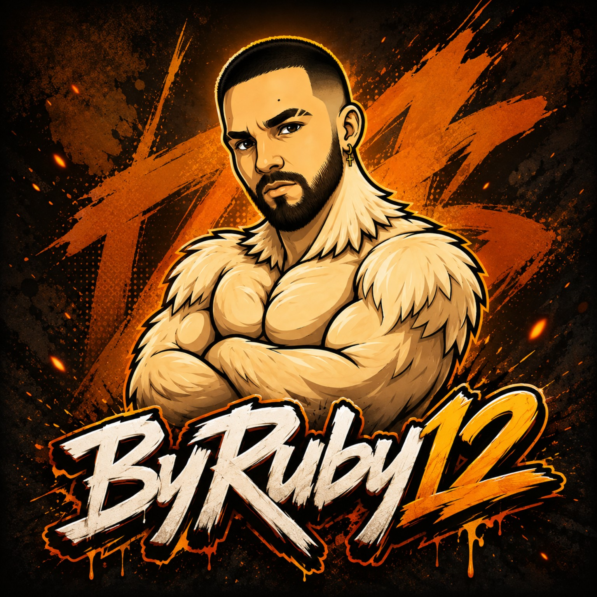

LIVE SYSTEM / 01
Buenos días, admin 12:40
Ventas hoy 2.840 €Pedidos 48

Descargar CV ↗Desarrollador web + automatización
Diseño y desarrollo productos digitales, sistemas de gestión y automatizaciones con IA que convierten procesos complejos en experiencias sencillas.
02 / Trabajo seleccionado
Una selección de productos, sistemas y experiencias web construidas con curiosidad, criterio técnico y obsesión por el detalle.
03 / El perfil
Soy Tomás Cano Nieto, desarrollador web y especialista en automatización con Inteligencia Artificial. Combino frontend, backend, datos y visión de negocio para convertir necesidades reales en herramientas claras, mantenibles y útiles.
He trabajado con tiendas online, CRM, ticketing, inventario, logística, bots, scraping, marketing digital y comunidades online. Me siento cómodo pasando de una interfaz responsive a una base de datos, de una API a un flujo de trabajo y de una idea a una solución desplegada.
04 / Recorrido
Cada etapa ha añadido una capa distinta: producto, operaciones, automatización, datos y la capacidad de explicar lo complejo.
La Tienda del Humor
Ayuntamiento de Madrid · IAM
La Tienda de España
Formación
Desarrollo frontend y backend, HTML, CSS, JavaScript, PHP, Java, SQL, APIs REST, bases de datos y metodologías ágiles.
Administración de sistemas Windows, redes, cableado, seguridad informática, soporte y resolución de incidencias.
05 / Caja de herramientas
La tecnología importa. Saber cuándo y por qué usarla, más.
HTML5 · CSS3 · SCSS · JavaScript · Python · PHP · Java · SQL · JSON · XML
Vue.js · Node.js · Next.js · Bootstrap · Tailwind CSS · Axios · MySQL · SQL Server · phpMyAdmin · Firebase
OpenAI API · integración de APIs de IA · bots inteligentes · NLP · prompt engineering · asistentes con IA · LaiadESK · Python-Telegram-Bot
Frontend y backend · mobile first · APIs REST · SEO técnico · UX/UI · hosting y dominios · iOS/Plesk · correo corporativo · optimización de rendimiento
CRM · sistemas de ticketing · gestión documental · automatización empresarial · gestión comercial · Google Maps scraping · eCommerce
Windows · configuración de redes WiFi · cableado estructurado · reparación y mantenimiento de equipos · soporte técnico · VirtualBox · seguridad informática
pytest · unittest · logging · depuración · Adobe Photoshop · Premiere Pro · CapCut · TikTok Studio · Mailchimp · TikTok Shop · diseño publicitario
06 / Siguiente capítulo
Cuéntame qué quieres construir, automatizar o mejorar. Siempre hay una primera conversación.
BYRUBY12.CONTACTO@GMAIL.COM ↗